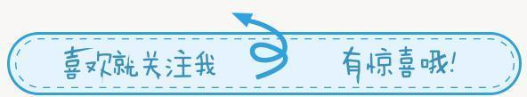
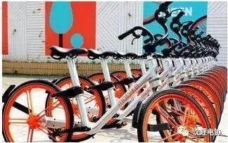
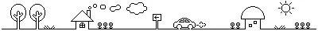
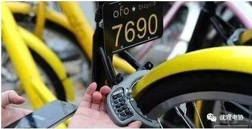
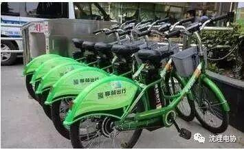
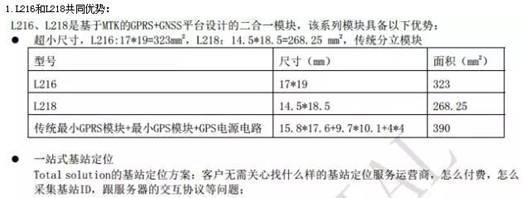
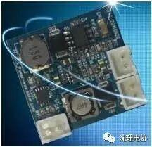

突发奇想！懂技术懂生活，电子工程师这样改造摩拜、OFO共享单车

最初的共享单车在校园诞生。2014年，北大毕业生戴威与4名合伙人共同创立OFO，致力于解决大学校园的出行问题。次年5月，超过2000辆共享单车出现在北大校园。截至到2017年2月，已经有包括摩拜、优拜、OFO、小鸣、小蓝、骑呗等在内的多家共享单车诞生并且都获得了大量的风险投资。
可能因为职业习惯，作为电子工程师，我突发奇想，主要出发点是带着大家从我的技术角度来看一看改造这些单车的可行性怎么样。
一 、摩拜单车
1.充电方式：采用发电花鼓，成本比较高。
2.定位方式GSM/GPRS和GPS定位模块（分离）
3.弊端：给客户带来骑行阻力大不好的体验。


二 、OFO
1.ofo没有安装GPS定位终端，用户无法通过手机APP来搜索附近的车辆，客户找车辆时需要碰运气。
2.每辆车的密码是固定的，如果有人记住密码可以免费享用。

三 、享骑出行智能锁
1.充电方式：电瓶供电，晚间给电瓶集中充电。
2.定位方案：内置GPS和GSM/GPRS
3.弊端：电瓶经常被偷。
个人认为享骑出行不是解决3公里问题而是10公里

OFO单车所没有GPS，这也就是我们在地图上看不到它的原因。即使ofo在你身边，APP也只会监测到附近有1辆，同样是没有具体坐标，我们猜测这可能是APP根据车辆最后结算的地点得来的，毕竟手机里有GPS。摩拜单车给人的体验就是重！沉！累！这几乎是所有人第一次上脚的感受，因为内置发电机+强悍的车架，所以消费者在骑行时体验很差。享骑电动车，最怕就是骑行中电瓶没电，还有就是目前投放的量较少，可能是成本过高的原因导致。
从上面来看，目前的单车给人的体验还不是很好。要解决这个问题，太阳能板发电方式无疑是最佳选择，它不仅可以降低成本 也可以提高客户体验度。
鉴此，智能锁也是一个很好的切入点。
目前有两种方案解决摩拜单车骑行体验差的问题。
第一种方法，主张继续降低智能锁功耗，这里有一个二合一模块方案。

第二种方法，主张在降低功耗的同时，采用太阳能供电，从而提高消费者体验。这里有一个智能电源模块。

有如下特点：
（1）所有调压均为自动完成，无需使用者编写控制软件；
（2）太阳能供电：采用常规太阳能电池板给智能电源模块供电，智能电源模块为宽范围输入电压8-24V；
（3）锂电池充电：智能电源模块提供锂电池充电功能，充电电压充满为4.2V；
（4）SK3主板供电：智能电源模块提供5V电源给SK3主板供电。
SK3物联网主板可以支持GPS定位和GPRS数据传输，从电子锁的供电，到数据的传输，再到车辆的定位都可以轻松解决。
信息部 白金朋